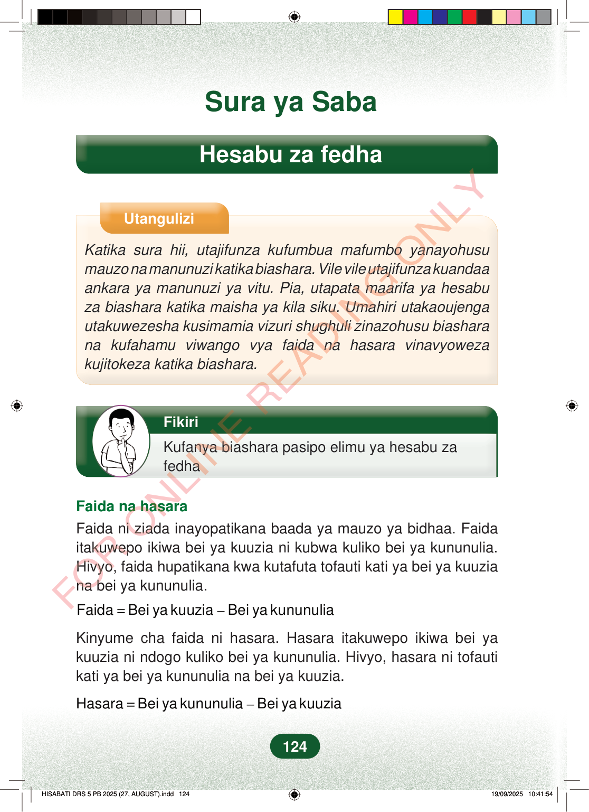

Sura ya SabaHesabu za fedhaUtanguliziKatika sura hii, utajifunza kufumbua mafumbo yanayohusumauzo na manunuzi katika biashara. Vile vile utajifunza kuandaaankara ya manunuzi ya vitu. Pia, utapata maarifa ya hesabuza biashara katika maisha ya kila siku. Umahiri utakaoujengautakuwezesha kusimamia vizuri shughuli zinazohusu biasharana kufahamu viwango vya faida na hasara vinavyowezakujitokeza katika biashara.FikiriKufanya biashara pasipo elimu ya hesabu zafedhaFaida na hasaraFaida ni ziada inayopatikana baada ya mauzo ya bidhaa. Faidaitakuwepo ikiwa bei ya kuuzia ni kubwa kuliko bei ya kununulia.Hivyo, faida hupatikana kwa kutafuta tofauti kati ya bei ya kuuziana bei ya kununulia.=–Faida Bei ya kuuzia Bei ya kununuliaKinyume cha faida ni hasara. Hasara itakuwepo ikiwa bei yakuuzia ni ndogo kuliko bei ya kununulia. Hivyo, hasara ni tofautikati ya bei ya kununulia na bei ya kuuzia.=–Hasara Bei ya kununulia Bei ya kuuzia124
Sura ya Saba
Hesabu za fedha
Utangulizi
Katika sura hii, utajifunza kufumbua mafumbo yanayohusu mauzo na manunuzi katika biashara. Vile vile utajifunza kuandaa ankara ya manunuzi ya vitu. Pia, utapata maarifa ya hesabu za biashara katika maisha ya kila siku. Umahiri utakaoujenga utakuwezesha kusimamia vizuri shughuli zinazohusu biashara na kufahamu viwango vya faida na hasara vinavyoweza kujitokeza katika biashara.
Fikiri
Kufanya biashara pasipo elimu ya hesabu za fedha
Faida na hasara Faida ni ziada inayopatikana baada ya mauzo ya bidhaa. Faida itakuwepo ikiwa bei ya kuuzia ni kubwa kuliko bei ya kununulia. Hivyo, faida hupatikana kwa kutafuta tofauti kati ya bei ya kuuzia na bei ya kununulia.
= – Faida Bei ya kuuzia Bei ya kununulia
Kinyume cha faida ni hasara. Hasara itakuwepo ikiwa bei ya kuuzia ni ndogo kuliko bei ya kununulia. Hivyo, hasara ni tofauti kati ya bei ya kununulia na bei ya kuuzia.
= – Hasara Bei ya kununulia Bei ya kuuzia
124
Sura ya SabaHesabu za fedhaUtanguliziKatika sura hii, utajifunza kufumbua mafumbo yanayohusu mauzo na manunuzi katika biashara.Vile vile utajifunza kuandaa ankara ya manunuzi ya vitu.Pia, utapata maarifa ya hesabu za biashara katika maisha ya kila siku.Umahiri utakaoujenga utakuwezesha kusimamia vizuri shughuli zinazohusu biashara na kufahamu viwango vya faida na hasara vinavyoweza kujitokeza katika biashara.FikiriKufanya biashara pasipo elimu ya hesabu za fedhaMvulana amesimama akiwaza, ameshika kidevu kwa mkono.Faida na hasaraFaida ni ziada inayopatikana baada ya mauzo ya bidhaa.Faida itakuwepo ikiwa bei ya kuuzia ni kubwa kuliko bei ya kununulia.Hivyo, faida hupatikana kwa kutafuta tofauti kati ya bei ya kuuzia na bei ya kununulia.Faida = Bei ya kuuzia - Bei ya kununuliaKinyume cha faida ni hasara.Hasara itakuwepo ikiwa bei ya kuuzia ni ndogo kuliko bei ya kununulia.Hivyo, hasara ni tofauti kati ya bei ya kununulia na bei ya kuuzia.Hasara = Bei ya kununulia - Bei ya kuuzia